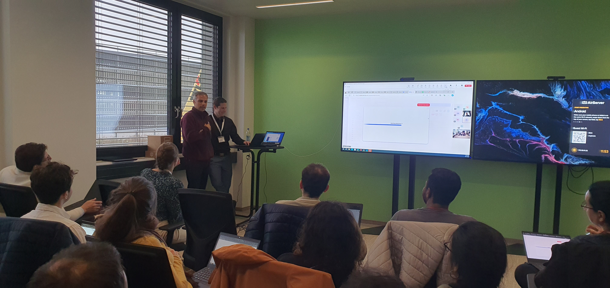
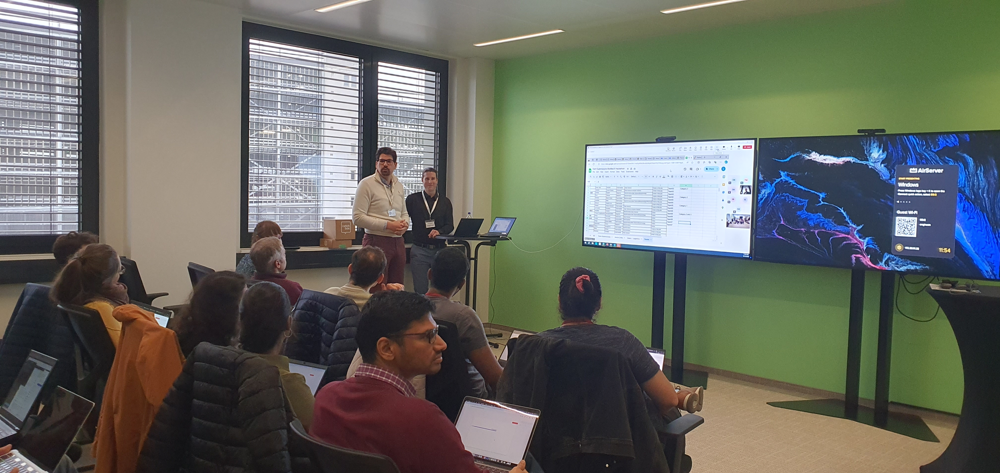
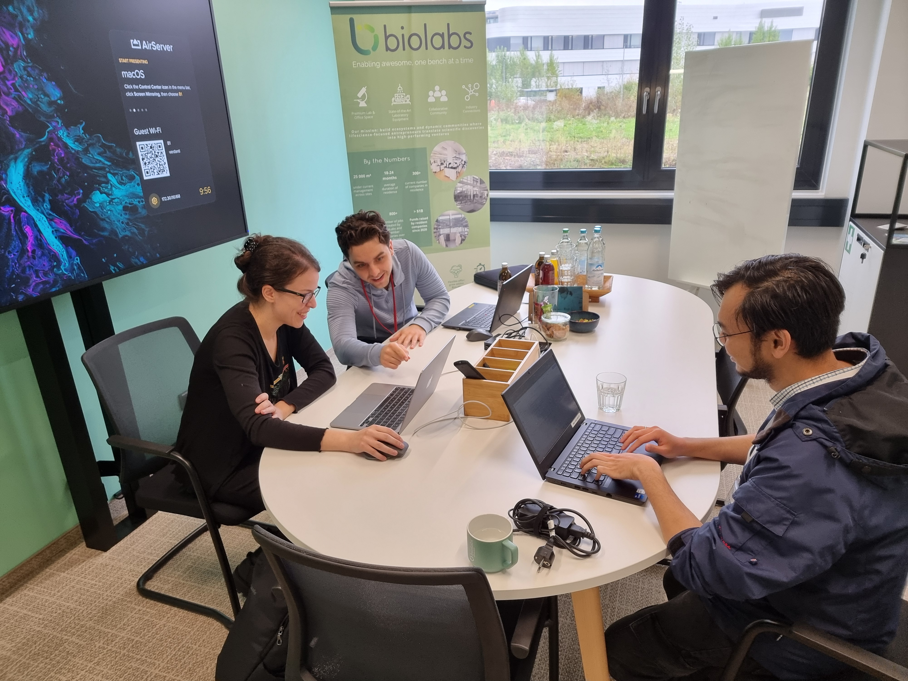
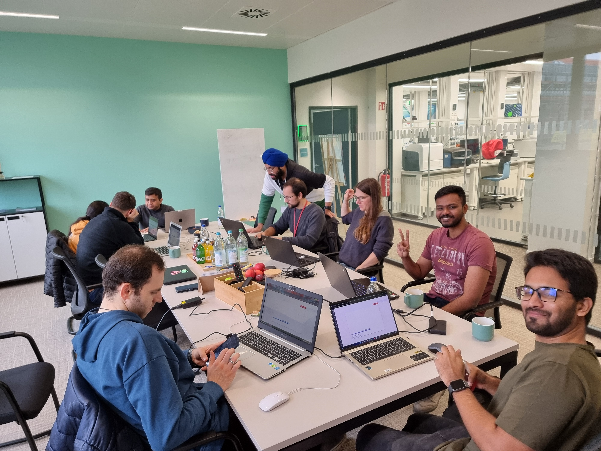
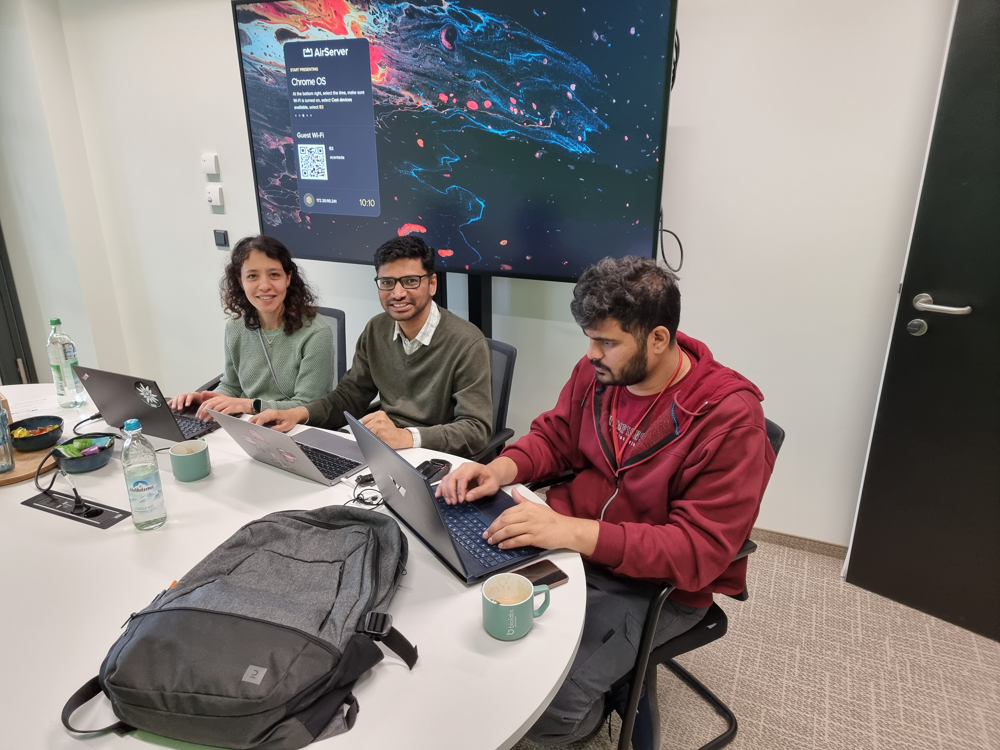
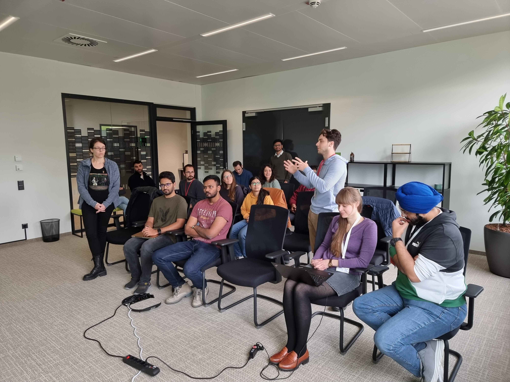
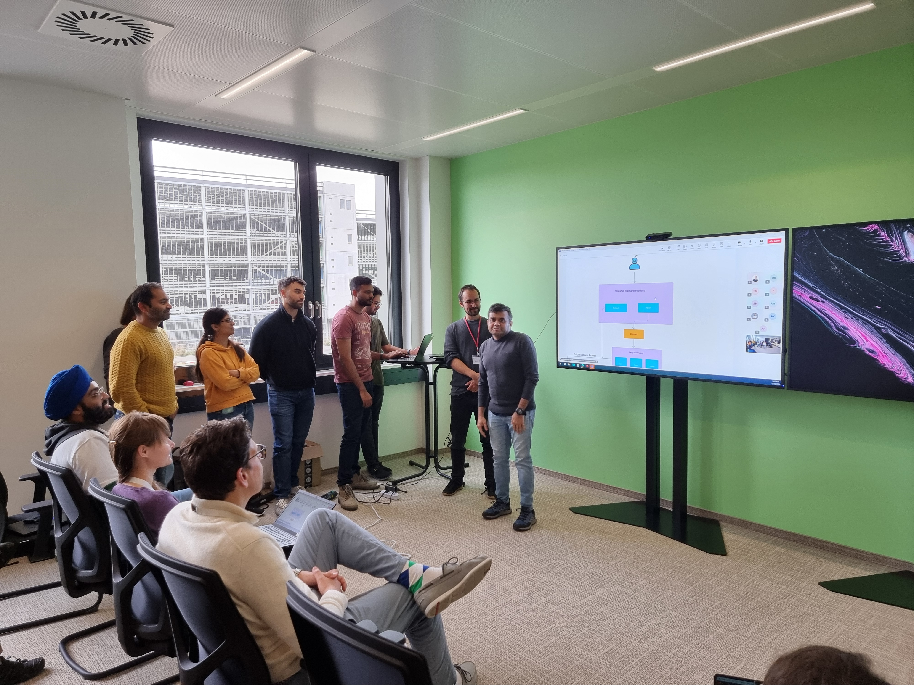

Results for AI agents for life sciences
🎉
3 AI Agents for Life Science applications were hacked by 7 teams during our past Hackathon in collaboration with Code Ocean, BioLabs Heidelberg, and Sanofi
🎉
The challenge
Create an AI Agent to
- simulate and ask questions of computational models of disease,
- process, analyse, and chat with single cell sequencing data, and
- query and talk to biomedical Knowledge Graphs
using only free form text inputs!
The result
✅ 1 OpenSource multi-AI-agent workflow starter kit including code, cloud-native virtual environment, and example data assets was created using Code Ocean and ran on Amazon Web Services (AWS) to kick-start the hackathon.
✅ 7 teams (21 participants) bravely undertook the immense challenge requiring both technical skill and biomedical knowledge over two days on October 14 to 15.
✅ 3 AI Agents that can add value to Drug Discovery, Drug Development, Biotechnology, and Pharmaceutical research were hacked together and demoed in front of industry judges.
The winners
🥇 Talk2Biomodels
- Team: Anil Kumar Kanasani, Rakesh Hadne Sreenath, and Maryam Najafian Jazi
- Judging: Developed a complete AI Agent that can be used as is to download mathematical models from BioModels, run forward simulations from natural language, and ask questions of simuulation results.
- Next stesp: Adding support for additional LLMs, reverse parameter fitting, and automated species annotations.
🥈 Talk2Cells
- Team/Consortium: Robin Koch, Mushtaq Ali, Katharina Bosch, Anton Jesu Vikranth, Ashwith Anand Poojary, Farhad Faghihi, Eron Alkanat, Sanjana Balaji Kuttae, and Jaydeep Bhat
- Judging: An incredible collaboration across 3 teams to develop components needed for single cell clustering, visualization, annotation, and gene perturbation, but ran out of time integrating the components together to create a complete AI agent.
- Next stesp: Completing the integration of the developed components to have a ready to use AI agent for single cell sequencing analysis, adding additional functionality from cell2sentence, and adding nf-core pipeline integration for processing raw data.
🥉 Talk2KnowledgeGraphs
- Team: Franscisco Arriaza Gallardo, Andrew Wicks, and Özge Kayisoglu-Kaya
- Judging: Developed an AI agent to reason over and visualize an extracted knowledge graph subgraph.
- Next stesp: Generalizing the Q&A to operate over the entire knowledge graph, adding support for expanding the knowledge graph from user supplied documents, adding support for link prediction to fill in gaps, and adding support for additional embeddings besides text.
🎗️ Additional contributions
- Amazing efforts from Sandeep Chenna, Thulasi Priyadharshini Muruganandam, Niklas Kiermeyer, divakar ravi kumar, and Simge Sengul Babal for contributing components that were integrated into the Talk2Biomodels, Talk2Cells, and Talk2KnowledgeGraphs code post-hackathon.
Shout out to the people who made it happen
⭐ Our coaches and judges Lilija Wehling, Ahmad Wisnu Mulyadi, and Gurdeep Singh from TeamVPE at BioMed X Institute, Henrik Cordes, Tommaso Andreani, Ph.D. from Sanofi, and Dr. Christoph Geiger from CodeOcean.
⭐ Technical wizardry from Shahar Frumkin, Jake Valsamis, Conor Mohan, PhD, Dror Hilman, Ben Even Tsur, Daniel Koster, and Simon Adar from Code Ocean who among many MANY things came to the rescue with additional AWS resources and licenses when we hit our limit during the Hackathon.
⭐ Our support team Merve P., Flavia-Bianca Cristian, Mallory Grahnert, Swathi Lingam, Sofija Prikule, Benjamin Raeder, Thomas Rueckle, and Christian Tidona from BioMed X Institute X.
⭐ The Cadillac of hackathon venues at BioLabs Heidelberg and amazing hosts Ornella Kossi, Ann-Kristin Mueller, and Stefanie Schimmel
⭐ Our courageous and motivated participants from DKFZ German Cancer Research Center, Heidelberg University, University of Cologne, Karlsruhe Institute of Technology (KIT), Goethe University Frankfurt, SRH Hochschule Heidelberg, and abroad who participated in person and online.
Photos
      